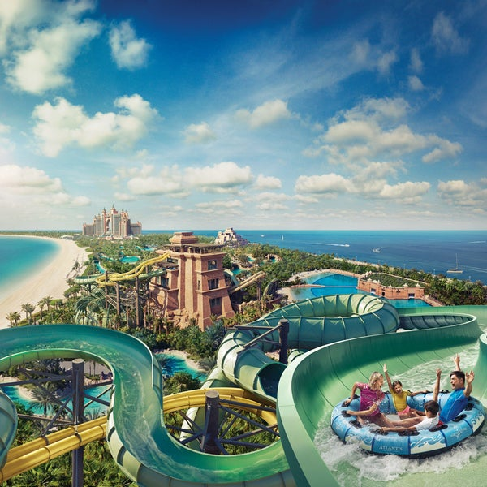

Pealeht


 Tohutud piirkonnad, atraktsioonide paljus pakuvad teile palju imelisi elamusi, mida on kuskilt mujalt maailmas raske saada. Veepark "Guppy" on suurepärane valik päeva, õhtu ja nädalavahetuse oma pere või sõpradega veetmiseks. Jagage neid õnnelikke hetki koos! Veepark "Guppy" on parim veekeskus maailmas, mis asub Võrtsjärve ääres ning on suurima pinnaga veepark Eestis. Veekeskus "Guppy" koosneb kahest alast: veepark ja saunaklubi. Veepargis te võite leida 5 erinevat liutoru, 50-meetrilist ujulat ja mitu lõõgastavat sauna.
 Randvere, Kase põik 89
Randvere, Kase põik 89
 +372 607 2895
+372 607 2895
 GuppyAqua
GuppyAqua AquaparkGuppy
AquaparkGuppy